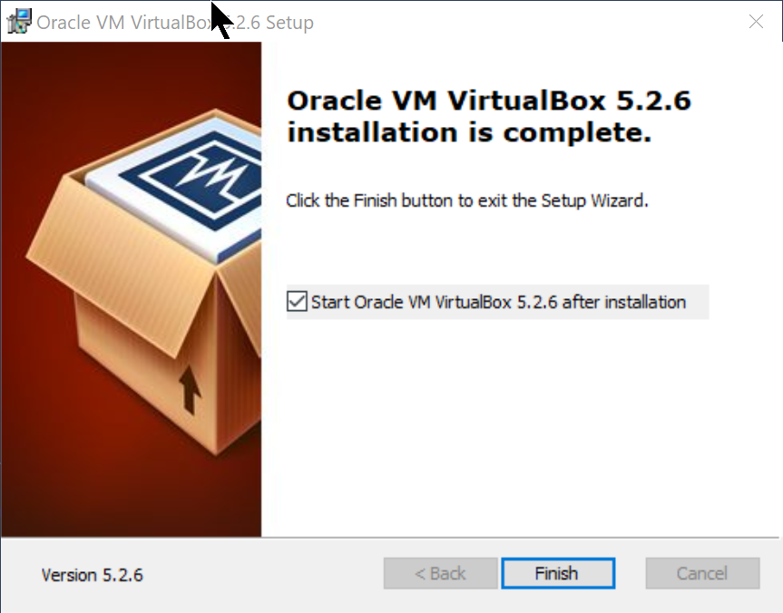

Installing VirtualBox¶
We will set up a Linux machine on your development system. To do this, we need
a virtual machine engine, which is a program designed to act like a real
computer. There are several possible such engines available:
VMware - used in our labs (a commercial product available on all platforms)
- VirtualBox - a free tool from Oracle (which we will use here)
- Parallels - a commercial product for Mac
VMware seems to be the most advanced engine, but it is complex. There is a free version of this product, which is what is installed on lab machines. I prefer to use the VirtualBox engine these days.
To install VirtualBox on a PC, you need to navigate to the product website and download the correct installer. I am going to demonstrate installing this tool on my Windows 10 system.
Here is the link I used to get the Windows installer:
Launch this program by double-clicking on the program file name in Windows
Explorer:
Click on “next” to proceed.

You can accept the default location for this program. Click “Next” to continue

Again, the defaults are fine. Click “Next” to continue.

Here, the installer is warning you that you might lose access to the Internet during the installation. No streaming video should be going on! Click “Next” to continue.

Now, we are ready to install the program. Click “Install” to continue.

At this point, the installation will begin. The installer will copy files into place. You will probably see this pop-up during the process.

Click on “Install” to let drivers be installed.
The installation should complete with no problems. Click on “Finish” when this screen appears.
Now that you have VirtualBox installed, we need to create a real virtual
machine running Linux. That is the topic of our next lecture!

{kind=link}
{kind=link}